One enclose outline
Merging Shape.blob and Shape.arcs into one
outline. Issue
#1247. Every render is the scratch prototype on branch
worktree-enclose-shape-unify.
-
One engine.
Shape.blob({ convexity, connected, holes, avoiding, clearance })closes the padded members with a disc and draws concave corners as arcs, not straight chords. -
Convexity stays. 0 is the spine, 1 is the padded convex hull.
The closing radius is found from it: the closed area fills
convexityof the gap between the spine and the hull. So the radius scales with the data, and users never set pixels. - No bumps. After the closing, a Gaussian along the outline (σ = padding) and the smallest outward push that keeps every member covered.
- No cusps. Two pieces closer than 2r always join with a smooth neck. Separate pieces are at least 2r apart, every outward curve is at least as round as the padding, and the outline never has a corner.
-
Presets.
Shape.hull()is convexity 1,Shape.spine()is convexity 0.Shape.arcs({ radius })keeps a pixel radius, allows separate pieces, and skips smoothing, for the bubble treemap. -
Removed:
neckandroundness. Most existing specs are unchanged.
Convexity
The U-shaped cloud, top row today, bottom row proposed. At convexity 1 the new outline is within 1.3 px of the exact padded hull, the distance the smoothing push adds. Area grows steadily with convexity on both charts.
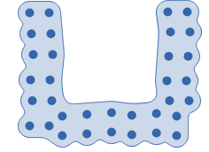
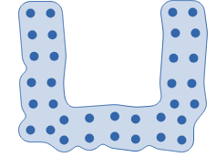
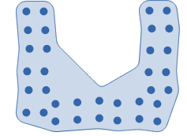
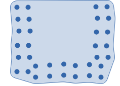
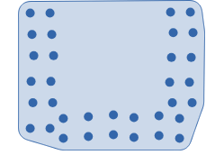
New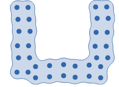
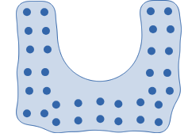
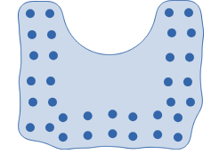
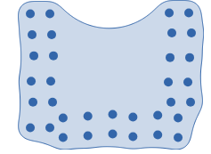
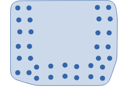
// proposed and today: same call
Shape.blob({ convexity: 0.5 });Today fills Delaunay triangles, so the inside of the U fills as a V-shaped wedge. The new outline fills it as one round arc. One weakness: when a pocket seals, the closing fills it all at once, so on this U the area share jumps from 0.24 to 0.65 between radius 52 and 56. Today's triangle filling has no jump. See decision 2.
ChartAccent, today then new
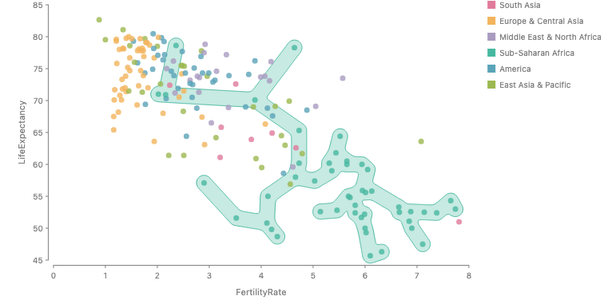
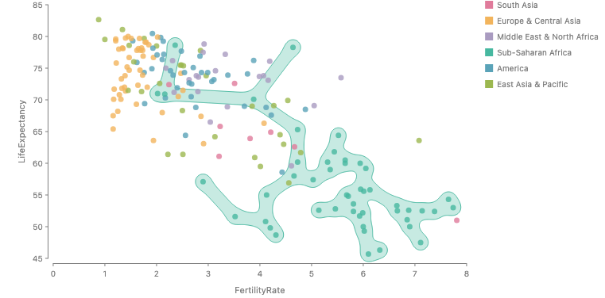
0.5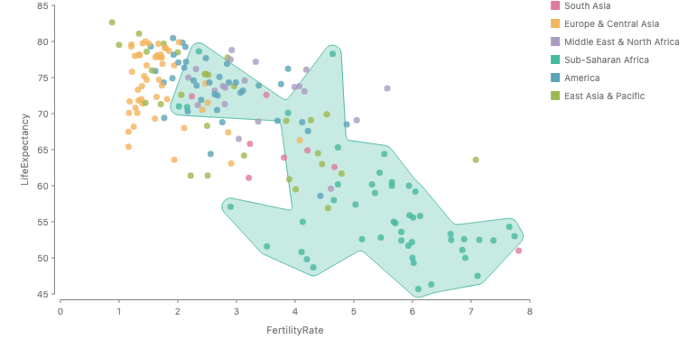
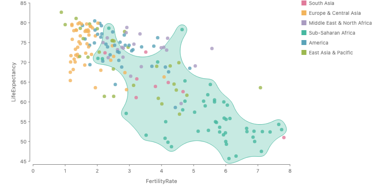
1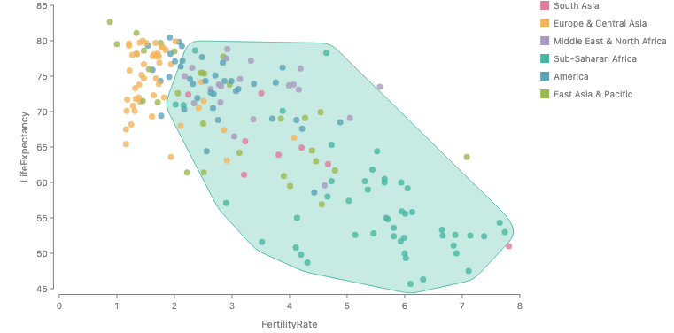
The enclose examples
Every enclose story from the original enclose PR (#1152) and from the
bubble treemap PR. Left is today, right is proposed.
Shape.box and Shape.oval stories do not
change and are left out.
ChartAccent, Sub-Saharan Africa
better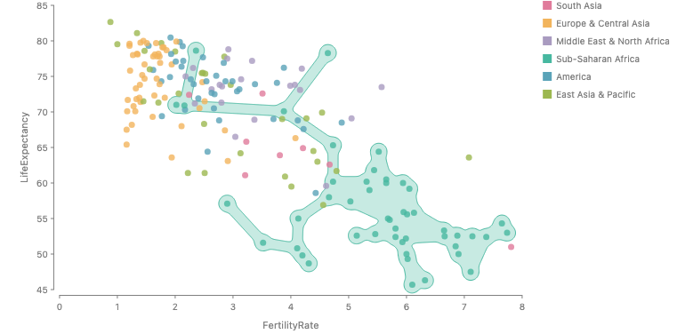
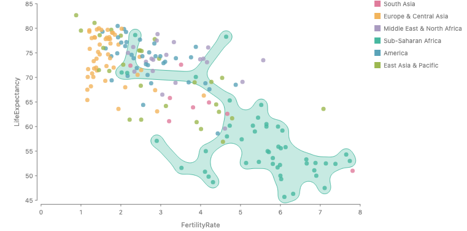
Shape.blob({ convexity: 0.1 });Shape.blob({ convexity: 0.1, neck: 0.6 });Wavy cluster edge, no bumps, one piece. The links to far outliers are still straight.
Penguin blobs
better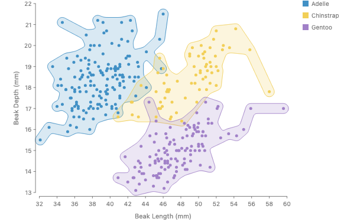
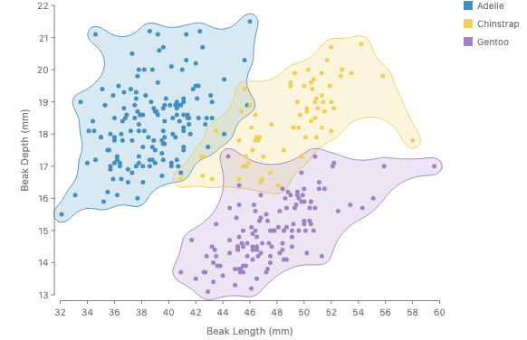
Shape.blob();Rounder. The found radius is 27, 40 and 60 px for the three species, so one convexity adapts to each cloud's spread. Slowest chart: up to 435 ms per species.
Penguin hulls
same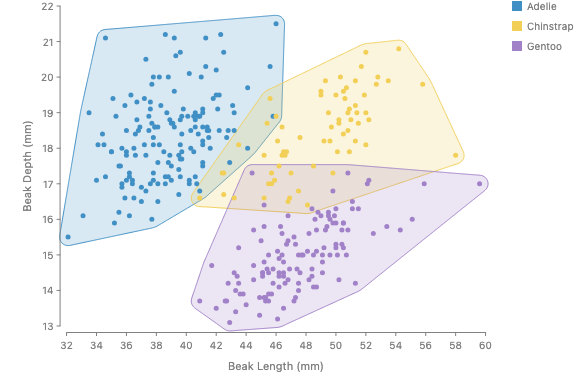
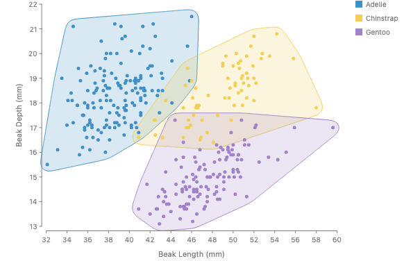
Shape.hull(); // = Shape.blob({ convexity: 1 })Penguin spines
same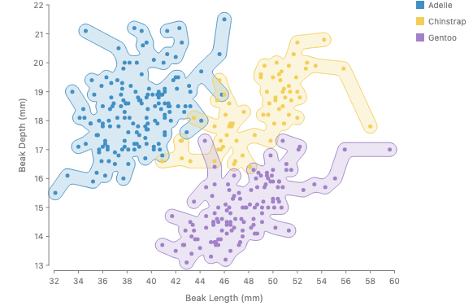
Shape.spine(); // = Shape.blob({ convexity: 0 })Slightly smoother. The smoothing push tightens inner corners to about 3 px, half the padding (decision 6).
Penguins, four shapes
better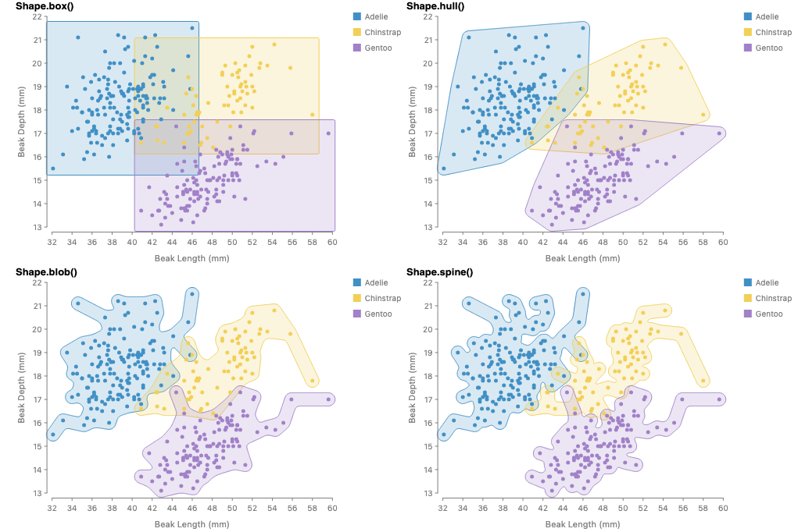
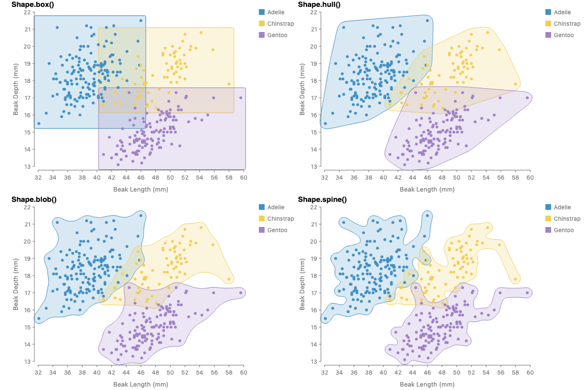
Shape.box();
Shape.hull();
Shape.blob();
Shape.spine();Only the blob panel changes visibly.
Munkres topology figure
same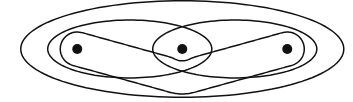
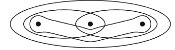
Shape.spine({ avoiding: [b], clearance: 6 });Routes around b, but hugs it closely instead of today's wide V.
Holes filled
different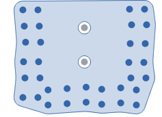
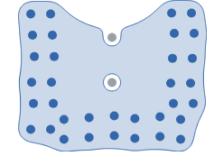
Shape.blob({ convexity: 0.75, avoiding: gray });The pocket closes with an arc, so the top gray dot now sits on the edge and becomes a notch instead of a hole. The lower one is still a clearance hole.
Holes kept
worse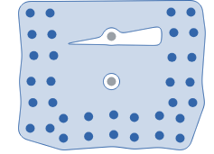
Shape.blob({ convexity: 0.75, holes: true, avoiding: gray });
Same as holes filled. Today's holes are triangles Delaunay leaves
empty. The closing only has a hole when a whole disc fits inside a
sealed pocket, so holes: true does nothing here at any
convexity (decision 3).
Hyperedges
same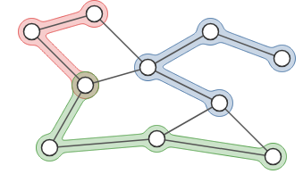
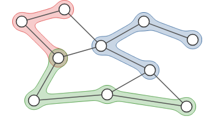
Shape.spine({ avoiding: allNodes, clearance: 3 });
Slightly smoother. Keep-outs hold with 0.00 px intrusion on every
story that uses avoiding.
Ref hull
same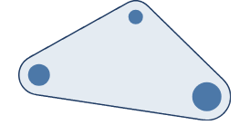
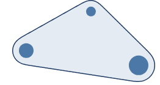
Shape.hull();Members: circles
better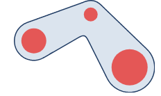
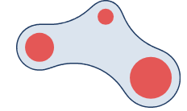
Shape.blob();Members: thick curves
better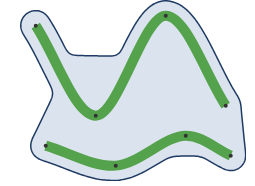
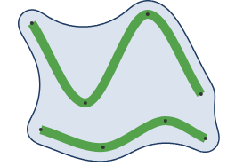
Shape.blob();Members: polygons
better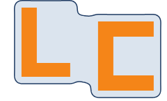
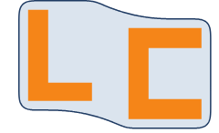
Shape.blob();Members: ribbon band
better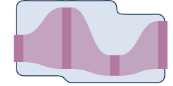
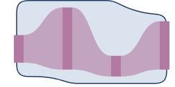
Shape.blob();Pack, enclosed
same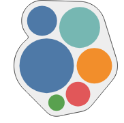
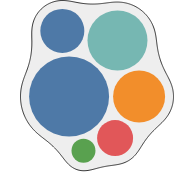
Shape.blob();Arcs radius sweep
same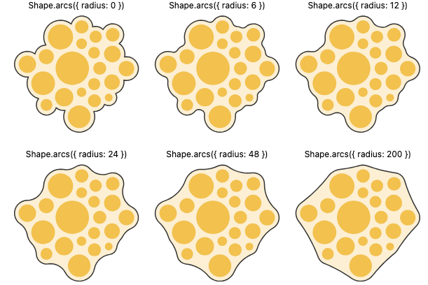
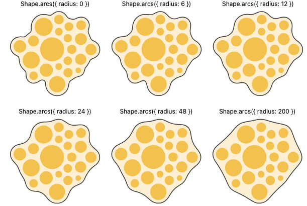
Shape.arcs({ radius });Rendered here with smoothing on, which rounds the creases at radius 0.
Bubble treemap
same exactworse smoothed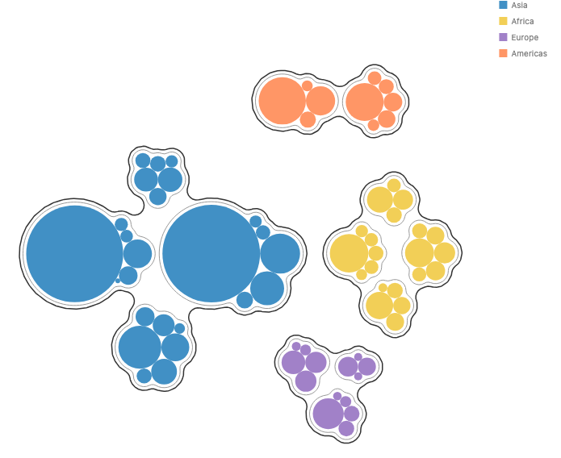
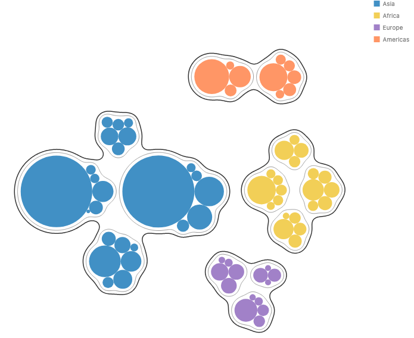
Shape.arcs({ radius: 12 }); // outer
Shape.arcs({ radius: 8 }); // innerNo cusps here, so the exact closing is unchanged. Smoothing loosens the nested contours, because the outward push is set by the thin stroked rings. So the arcs preset skips smoothing (decision 4).
Cusps
A cusp forms when two padded members are closer than 2r, so the closing disc cannot pass between them, yet their outlines still don't meet. The closing then has a corner where the two outside arcs cross: the teardrop tail. Only the plain closing has them. With links between pieces, and in the bubble treemap, there are none. Smoothing alone does not remove them.
Fix: any two pieces whose gap is under 2r get a zero-width link
at their nearest points, shortest gaps first, repeated until no two
pieces are that close. That is the closing's own rule, "every gap the
disc cannot pass through fills", applied literally.
connected: true is the same step with no distance limit.
On ChartAccent at radius 12, 24, 40 and 80 there are 0 corners left.
The tightest outward curve is 9.5 px, the padded dot. Runtime is
unchanged, 11 to 25 ms.
Radius 40: before, after, after with smoothing
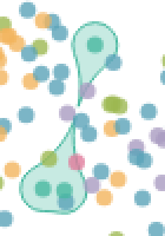
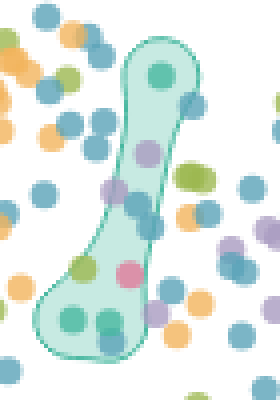
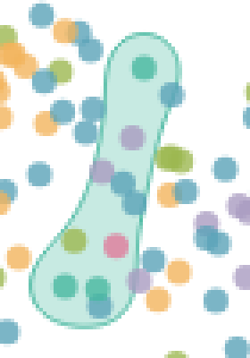
Radius 24, padding 10: before, after, after with smoothing
Radius 40, whole chart: before
Radius 40, whole chart: after with smoothing
Bumps
The closing alone makes small bumps where a dot sits slightly outside its neighbors: the edge follows that dot's own circle between two concave arcs. The smoothing step removes them. Top row before, bottom row after.
Decisions for you
-
Convexity is the only concavity knob on
blob, with the radius found from it.radiusstays only on thearcspreset. Recommended. - The sealed-pocket jump. On the U, convexity 0.25 and 0.5 land closer together than they should, because a pocket fills all at once when it seals. Accept it, or keep that range continuous by letting a sealed pocket fill gradually (more design work).
-
What
holesmeans now. The closing rarely leaves a hole, soholes: trueis close to a no-op. Options: dropholes, or redefine it as "don't fill a pocket once it seals". -
Smoothing on the
arcspreset: off (recommended; keeps the exact bubble treemap contour), or on with σ scaled to member size. -
Drop
neck. Links are zero-width now. A link-width option exists in the prototype but is not wired in. - Spine inner corners. At convexity 0 the smoothing push tightens inner corners to about half the padding. Accept, or cap the push there.
Why one outline is principled, and earlier renders
Today's blob fills Delaunay triangles smallest first, which is an alpha complex. The arcs closing is the matching alpha hull: the same concavity axis, with concave arcs where the blob draws straight chords. That is why blob drew long straight edges, and why the bubble treemap looks like rounded polygons under blob.
The closing alone is only tangent-continuous, splits sparse sets into pieces, and leaves cusps at near-joins. The links, the cusp rule, and the smoothing step fix those three problems one by one.
Today's blob
Plain arcs, radius 12
Plain arcs, radius 24
Arcs 24 with links, before smoothing
Bubble treemap under today's blob
Plain arcs, radius 80: pixel radius over-fills